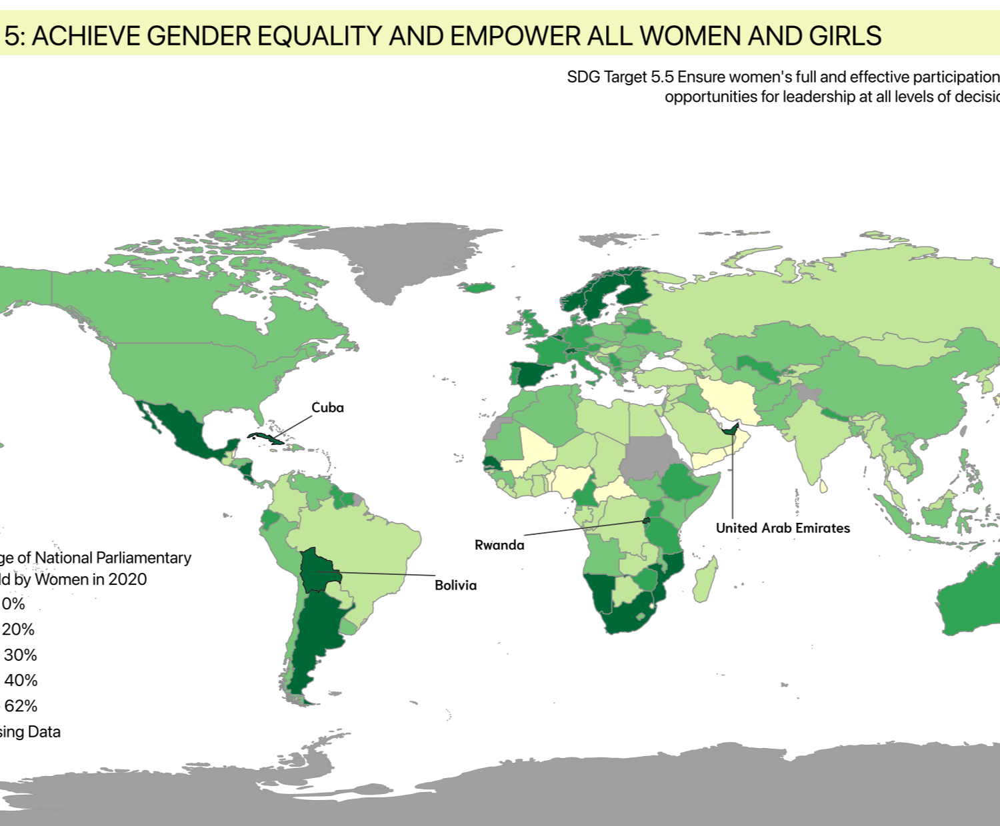
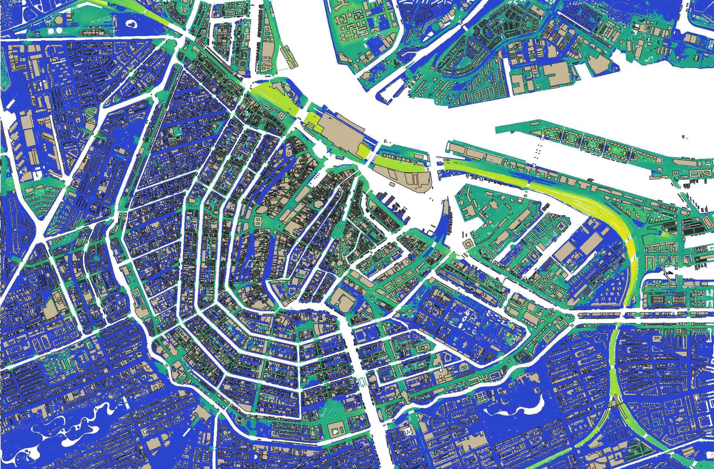

Map Portfolio

Choropleth Map
A map showing the global proportion of women in national parliaments to visualize progress toward political gender equality (SDG 5).

Vector Analysis
Map using walking-time isochrones to assess how equitably recycling points are accessible across residential Munich (SDG 11).

Land Cover Classification
Maps comparing classification methods on Utrecht satellite imagery to evaluate accuracy in identifying land cover types (SDG 15).

Flood Elevation Model
Simulation of potential urban flooding using digital elevation models to examine how terrain influences flood extent and communicate flood risk through interactive 3D visualisation.

Vegetation Indices
Tracking vegetation loss along the Barito River in Borneo by comparing satellite-derived NDVI values between 2018 and 2025 to examine deforestation and land cover change in a biodiversity hotspot.

Multicriteria Analysis
Design of a GIS workflow combining land cover, road proximity, slope, and patch size to identify optimal wildlife corridor routes (SDG 15).